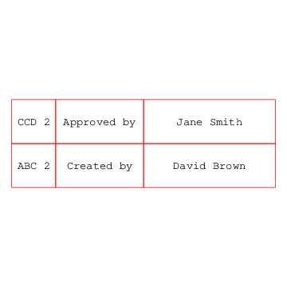

| Object: GENERAL-NOTE (The :GEOM-BASE Package) |
| Mixins: OUTLINE-SPECIALIZATION-MIXIN, BASE-OBJECT |
| Input Slots (optional) | |
| BOUNDING-BOX [from BASE-OBJECT] list of two 3d points | |
The left front bottom and right rear top corners, in global coordinates, of the rectangular volume bounding the tree of geometric objects rooted at this object. | |
| CENTER 3d-point | |
Center of the text. Specify this or start, not both.
| |
| CHARACTER-SIZE number | |
Specifies the character size in drawing units. | |
| DXF-FONT string | |
This names the DXF font for this general-note. Defaults to (the font). | |
| DXF-OFFSET number | |
The start of text will be offset by this amount for DXF output. Default is 0. | |
| DXF-SIZE-RATIO number | |
The scale factor for DXF character size vs PDF character size. Default is 0.8 | |
| DXF-TEXT-X-SCALE number in percentage | |
Adjusts the character width for DXF output. Defaults to the text-x-scale. | |
| FONT string | |
The font for PDF. Possibilities for built-in PDF fonts are:
| |
| HEIGHT [from BASE-OBJECT] number | |
Z-axis dimension of the reference box. Defaults to zero. | |
| HIDDEN? [from VANILLA-MIXIN*] boolean | |
Indicates whether the object should effectively be a hidden-object even if specified in :objects. Default is nil. | |
| IMAGE-FILE [from BASE-OBJECT] pathname or string | |
Points to a pre-existing image file to be displayed instead of actual geometry for this object. Defaults to nil | |
| JUSTIFICATION keyword symbol, :left, :right, or :center | |
Justifies text with its box. Default is :left. | |
| LEADING number | |
Space between lines of text. Default is 1.2 times the character size. | |
| LENGTH [from BASE-OBJECT] number | |
Y-axis dimension of the reference box. Defaults to zero. | |
| OBLIQUENESS [from BASE-OBJECT] 3x3 orthonormal matrix of double-float numbers | |
This is synonymous with the orientation. | |
| ONCLICK-FUNCTION [from BASE-OBJECT] lambda function of zero arguments, or nil | |
If non-nil, this function gets invoked when the user clicks the object in graphics front-ends which support this functionality, e.g. SVG/Raphael and X3DOM. | |
| OUTLINE-SHAPE-TYPE keyword symbol | |
Currently can be :bubble, :rectangle, or :none. Default is :none. | |
| ROOT [from VANILLA-MIXIN*] gdl instance | |
The root-level node in this object's ``tree'' (instance hierarchy). | |
| SAFE-CHILDREN [from VANILLA-MIXIN*] list of gdl instances | |
All objects from the :objects specification, including elements of sequences as flat lists. Any children which throw errors come back as a plist with error information | |
| START 3d-point | |
Start of the text. Specify this or center, not both. | |
| STRINGS list of strings | |
The text to be displayed in the note. | |
| STRINGS-FOR-DISPLAY [from VANILLA-MIXIN*] string or list of strings | |
Determines how the name of objects of this type will be printed in most places. This defaults to the name-for-display (generally the part's name as specified in its parent), followed by an index number if the part is an element of a sequence. | |
| TEXT-X-SCALE number in percentage | |
Adjusts the character width for PDF output. Defaults to 100. | |
| UNDERLINE? boolean | |
Determines whether text is underlined. | |
| VISIBLE-CHILDREN [from VANILLA-MIXIN*] list of gdl instances | |
Additional objects to display in Tatu tree. Typically this would be a subset of hidden-children. Defaults to NIL. | |
| WIDTH number | |
Determines the width of the containing box. Default is the maximum-text-width. | |
| Input Slots (optional, defaulting) | |
| DISPLAY-CONTROLS [from BASE-OBJECT] plist | |
May contain keywords and values indicating display characteristics for this object. The following keywords are recognized currently:
| |
| ORIENTATION [from BASE-OBJECT] 3x3 matrix of double-float numbers | |
Indicates the absolute Rotation Matrix used to create the coordinate system of this object. This matrix is given in absolute terms (i.e. with respect to the root's orientation), and is generally created with the alignment function. It should be an orthonormal matrix, meaning each row is a vector with a magnitude of one (1.0). | |
| Computed Slots | |
| MAXIMUM-TEXT-WIDTH number | |
Convienence computation giving the maximum input width required to keep one line per string | |
(in-package :gdl-user)
(define-object general-note-test (base-object)
:computed-slots
((blocks-note
(list
"David Brown" "Created by" "ABC 2"
"Jane Smith" "Approved by" "CCD 2"))
(blocks-center
(list '(-15 5 0) '(-40 5 0) '(-55 5 0)
'(-15 15 0) '(-40 15 0) '(-55 15 0)))
(blocks-width (list 30 20 10 30 20 10)))
:objects
((title-block :type 'box
:sequence (:size (length (the blocks-center)))
:display-controls (list :color :red)
:center (apply-make-point
(nth (the-child index )
(the blocks-center)))
:length 10
:width (nth (the-child index )
(the blocks-width))
:height 0)
(general-note-sample :type 'general-note
:sequence (:size (length (the blocks-note)))
:center (the (title-block
(the-child index)) center)
:character-size 2.5
:strings (nth (the-child index)
(the blocks-note)))))
(generate-sample-drawing
:objects (list-elements (make-object 'general-note-test))
:projection-direction (getf *standard-views* :top))
|  |